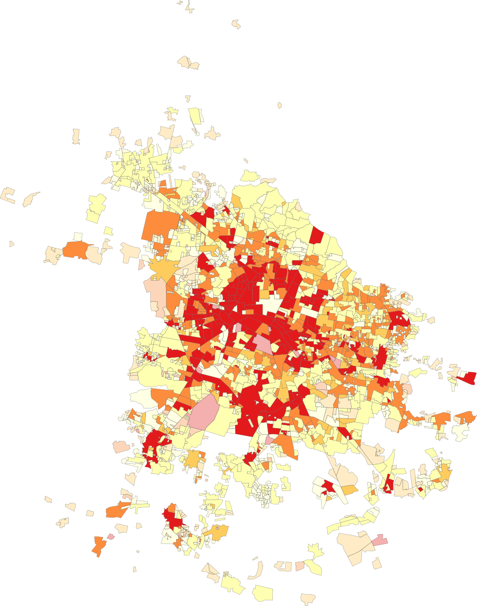
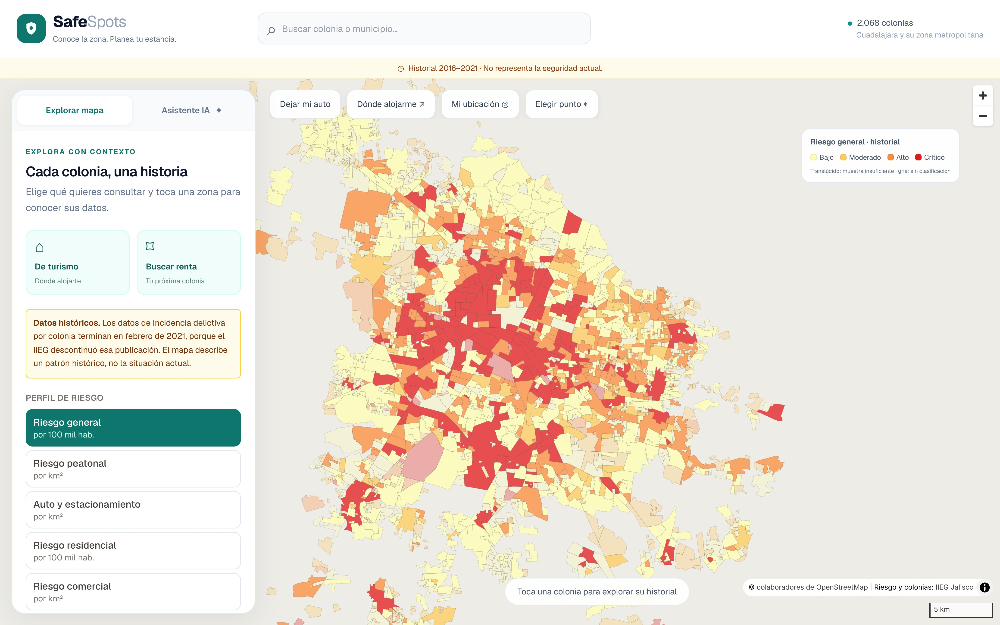

1Introducción
El INEGI y el IIEG publican incidencia delictiva en tablas que no responden preguntas concretas: dónde alojarse, dónde rentar o dónde dejar el auto.
SafeSpots convierte esa incidencia en un índice de riesgo comparable por colonia, por perfil de uso, y lo entrega en un mapa interactivo y en recomendaciones de un asistente acotado a los datos del sistema.
Objetivos
- Pipeline reproducible con huella SHA-256 por archivo.
- Empatar la incidencia con los polígonos oficiales con cobertura > 80%.
- Índice de riesgo para cinco perfiles de usuario.
- Publicarlo en una aplicación web cartográfica.
- Medir el efecto de la indexación espacial.
2Problema e hipótesis
Problema. En la ZMG no existe un indicador de riesgo delictivo comparable por colonia. Los mapas habituales dividen todo entre población residente, por lo que el Centro de Guadalajara —2,585 habitantes y cientos de miles de visitantes— aparece como la zona más peligrosa imaginable.
3Metodología
- Verificación de fuentes, una por una: IIEG (incidencia y colonias), INEGI (Marco Geoestadístico 2025, Censo 2020) y SESNSP.
- ETL reproducible: descarga con huella SHA-256, reparación de geometrías y taxonomía canónica de delitos.
- Empate de nombres en 4 pasos de confiabilidad decreciente: exacto, alias del padrón, tokens ordenados y difuso acotado al municipio.
- Índice de riesgo: ponderación por severidad, tasa por perfil, contracción bayesiana empírica (Clayton y Kaldor), escala logarítmica 0–100.
- Estratificación en bajo, moderado, alto y crítico; intervalos de Poisson (Byar) para marcar muestras insuficientes.
- Validación: suite de pruebas automatizadas y benchmark reproducible de consultas espaciales.
4Desarrollo y tecnología
Cinco perfiles de riesgo
| Perfil | Delitos | Base |
|---|---|---|
| General | Todos, por severidad | 100 mil hab. |
| Peatonal | Robo a persona, lesiones, homicidio | km² |
| Vehicular | Robo de vehículo y autopartes | km² |
| Residencial | Robo a casa, violentos | 100 mil hab. |
| Comercial | Robo a negocio, banco, carga | km² |
Asistente con garantías
El servidor calcula distancias reales y filtra candidatas; el modelo de lenguaje solo redacta. Su respuesta se valida contra la lista enviada y se rechaza si menciona una colonia inexistente. No puede afirmar que una zona “es segura” ni dar precios.
5Figuras

- Crítico · 207
- Alto · 310
- Moderado · 517
- Bajo · 1,034

6Resultados
Cobertura del empate
Consultas espaciales (ms, log)
Comparación con los objetivos
| Objetivo | Resultado | |
|---|---|---|
| Pipeline reproducible | ETL completo en ~5 s, manifiesto con SHA-256 por archivo | ✔ |
| Cobertura > 80% | 84.4% de incidentes ubicados; el resto se reporta en la interfaz | ✔ |
| Índice por perfil | 10,340 filas de riesgo (2,068 colonias × 5 perfiles) | ✔ |
| Aplicación web | Desplegada en Vercel con mapa, ficha y asistente | ✔ |
| Efecto del índice | Radio de 2 km: 124 → 13 ms; 100 mil puntos: 636 → 3.4 s | ✔ |
| Hipótesis | Confirmada dentro del alcance; clustering y análisis día/noche no son posibles con datos públicos | Parcial |
7Conclusiones
- Una base espacial con publicación estática democratiza datos de seguridad a costo marginal.
- La segmentación por perfil fue el aporte con más efecto práctico: el denominador cambia por completo la conclusión sobre una colonia.
- El análisis de riesgo intraurbano en Guadalajara está limitado por la disponibilidad de datos, no por la técnica. Declarar ese límite es en sí un resultado.
8Trabajo a futuro
- Solicitar al C5 / Fiscalía datos con coordenadas y hora: clustering (DBSCAN), franjas horarias y modelo predictivo.
- Integrar SESNSP como capa de tendencia reciente y siniestros viales.
- Cruzar el riesgo con el precio por m² para el módulo inmobiliario.
- Cuota y autenticación del asistente; aplicación móvil sobre la misma API.
9Bibliografía
- IIEG Jalisco, Incidencia delictiva por colonia e Información sociodemográfica por colonia. [En línea]. https://iieg.gob.mx
- INEGI, Marco Geoestadístico 2025 y Censo de Población y Vivienda 2020. [En línea]. https://www.inegi.org.mx
- SESNSP, Datos Abiertos de Incidencia Delictiva. [En línea]. https://www.gob.mx/sesnsp
- M. Ester, H.-P. Kriegel, J. Sander y X. Xu, “A density-based algorithm for discovering clusters in large spatial databases with noise,” Proc. KDD, 1996, pp. 226–231.
- D. Clayton y J. Kaldor, “Empirical Bayes estimates of age-standardized relative risks for use in disease mapping,” Biometrics, vol. 43, núm. 3, pp. 671–681, 1987.
- N. E. Breslow y N. E. Day, Statistical Methods in Cancer Research, Vol. II. Lyon: IARC, 1987.
- C. A. Brewer, ColorBrewer: Color Advice for Maps. [En línea]. https://colorbrewer2.org
- PostGIS Development Group, PostGIS Documentation. [En línea]. https://postgis.net
- Google, Gemini API — Structured output. [En línea]. https://ai.google.dev/gemini-api/docs